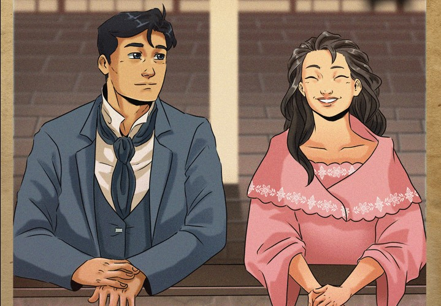

Kabanata 7 : Pag-uulayaw sa Asotea

Mababasa rin dito ang ginawang sakripisyo ni Crisostomo para magkaroon siya ng mabuting kinabukasan.
Buod
Maagang nagsimba si Maria Clara kasama si Tiya Isabel, at pag-uwi nila, agad silang nag-agahan.
Matapos kumain, napagpasiyahan ni Maria Clara na manahi muna habang naghihintay sa kasintahang nakatakdang dumalaw sa araw na iyon.
Maya-maya pa, dumating na si Crisostomo. Nagtungo silang dalawa sa asotea para makapag-usap.
Ganoon na lamang ang katuwaan ng magkasintahan nang makitang muli ang isa't-isa matapos ang pitong taon.
Ginugol nilang dalawa ang kanilang oras sa pag-alala ng kanilang nakaraan noong sila ay mga musmos pa lamang.
Ipinahayag ng dalawa ang mga patunay na hindi sila nakalimot sa kanilang naging sumpaan.
Si Maria ay nagbalik tanaw mula sa kanyang buhay sa Beaterio habang si Ibarra naman ay sa kanyang pag-aaral at pakikipagsapalaran sa Europa.
Binasa ni Maria Clara ang nag-iisang liham mula kay Crisostomo, ngunit dahil dito naalala niya ang kaniyang ama.
Nagpaalam ang binata sa kasintahan upang pumunta sa kaniyang bayan,
ang San Diego, at mapagyaman ang libingan nito para sa Araw ng mga Patay.
Repleksiyon
Ang pag-ibig ay nakatakda sa tamang panahon kaya't matuto tayong maghintay.
Gawin muna nating prayoridad ang mga bagay na mas mahalaga para sa ating kinabukasan.
Taon o dekada man ang abutin, hindi tayo dapat na sumuko o mainip.
Katulad ng magkasintahang sina Maria at Crisostomo,
kailangan nating manalig at magtiwala sa isa't-isa.
Kapag tama na ang panahon, at maayos na ang lahat,
maaari na nating gawin ang nais natin.
Si Crisostomo ay isang mabuting huwaran sa madaming paraan.
Isa na rito ang pagpapakita niya ang katangian na dapat taglayin ng isang binatang Pilipino;
Pumunta siya sa bahay ng kaniyang iniirog upang suyuin ito,
hindi niya minadali ang kanilang relasyon,
at hindi siya nakalimot sa pangakong kaniyang binitawan.
Sa aking pananaw, ang kabanatang ito ay magsisilbing aral
para sa mga mapupusok na kabataan.